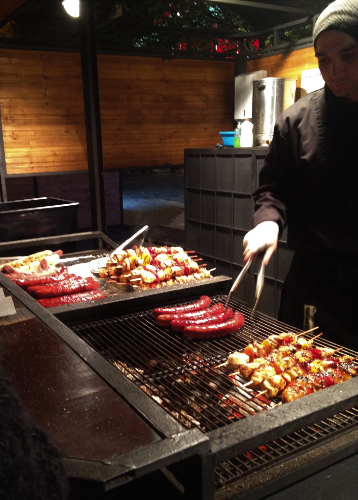
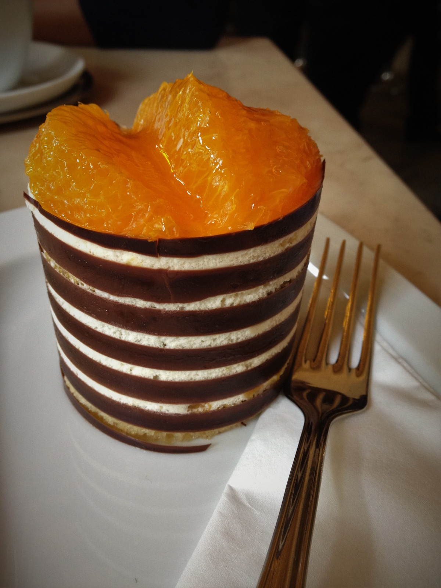
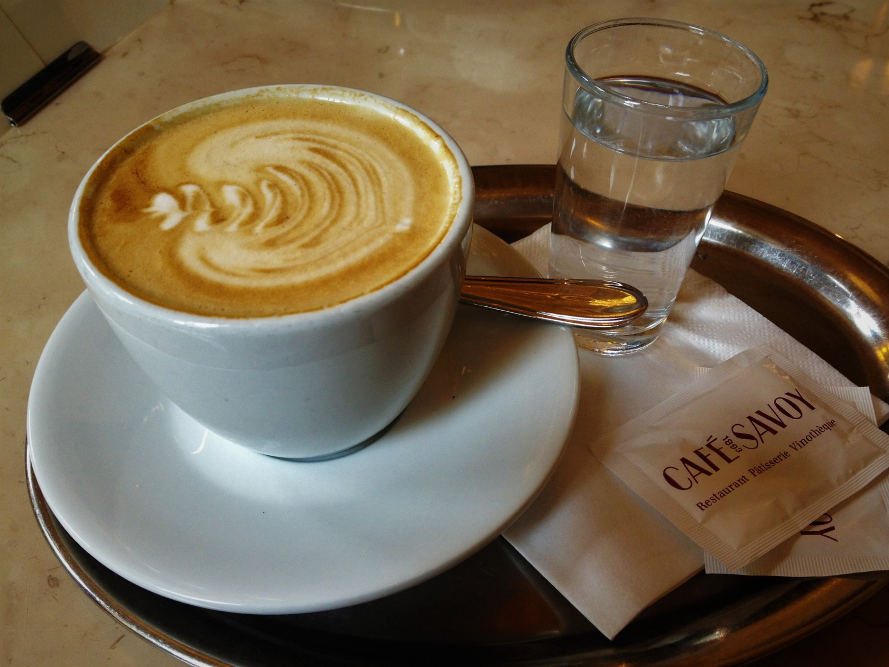
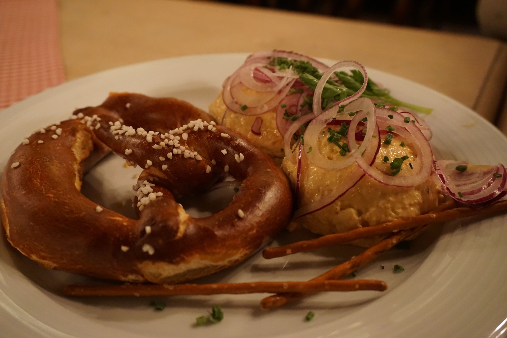

This is not a ranking of the world’s best food. It is more personal than that. These are the tastes that carry an entire journey with them — the table, the weather, the walk that made us hungry and the family story we now tell whenever the dish comes up.
A great travel meal does more than taste good. Years later, it can return you to a place in a single bite.
Roasted pork knuckle
U Tří Růží · Prague, Czech Republic


It arrived with bones pointing in every direction and a skin that crackled under the knife. Beneath it, the meat was tender; around it sat sharp mustard, sauerkraut and pickles. It was the kind of meal that turned lunch into an event and taught us more about the Czech appetite than a paragraph in a guidebook could.
For the combination: crisp skin, lager, old-brewery atmosphere and the permission to spend an afternoon eating something gloriously impractical.
Chocolate and orange pastry
Café Savoy · Prague, Czech Republic


We went for the grand nineteenth-century room and stayed for a pastry that balanced dark chocolate with bright orange. The coffee, silver tray and slow pace completed the memory. This is the entry that reminds us atmosphere matters — but the food still has to earn its place.
Because it made a café stop feel like part of Prague’s cultural history rather than merely a break from sightseeing.
Pretzel and Obatzda
Bavaria, Germany

There is no elaborate presentation here: warm, deeply browned bread, salt crystals and a soft cheese spread sharpened with onion. The memory is tied to the ease of it — food that belongs to beer gardens, conversation and the end of a day outside.
Because the setting and the food are inseparable. Recreating the recipe at home is not quite the same as eating it where it belongs.
A living list, not a finished verdict
The archive already contains many more candidates; Korea will add another chapter. As we build the journal, every entry should include the real memory, the exact place when we know it and an honest answer to one question: would we genuinely travel back for this?